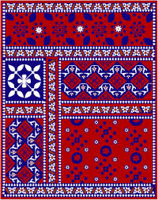
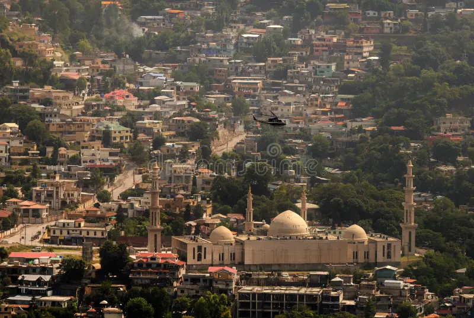

Provinces of Pakistan
Pakistan currently has five provinces: Punjab, Sindh, Balochistan, Khyber Pakhtunkhwa and Gilgit-Baltistan. In addition to these four provinces, the country also includes the Islamabad Capital Territory,
Punjab

Punjab is known as the land of five rivers. It is famous for its fertile lands, vibrant culture, and historic cities such as Lahore. Punjab is also home to the Badshahi Mosque, Shalimar Gardens, and delicious Punjabi food.
Sindh
Sindh is home to the ancient Indus Valley Civilization, including Mohenjo-Daro. Karachi, the largest city of Pakistan, is also in Sindh. The province is rich in Sufi traditions, Ajrak, Sindhi topi, and handicrafts.
Khyber Pakhtunkhwa (KPK)
KPK is known for its breathtaking mountains, valleys, and the hospitality of the Pashtun people. Famous for its Chapli Kababs, Attan dance, and historic sites in Peshawar, it is a gateway to the Himalayas and Karakoram ranges.
Balochistan
Balochistan is the largest province of Pakistan by area, known for its deserts, mountains, and coastline along the Arabian Sea. The people are famous for their bravery, Sajji dish, and unique culture.
Gilgit-Baltistan


Gilgit-Baltistan is known as the roof of the world. It is home to the world’s highest peaks, including K2. Tourists from around the world visit Hunza, Skardu, and Fairy Meadows for breathtaking landscapes.
Azad Kashmir

Azad Kashmir is a region of scenic beauty with rivers, valleys, and green mountains. Places like Neelum Valley and Muzaffarabad attract tourists from all over Pakistan.